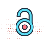
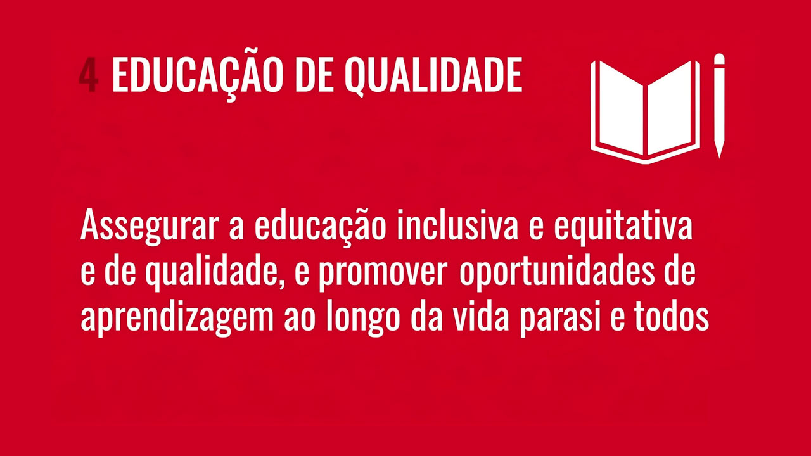
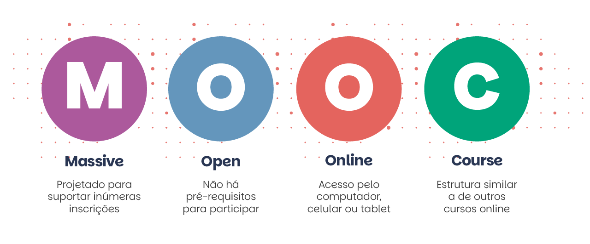

Módulo 5 . Aula 1
O que é Educação Aberta: modelos, desafios e perspectivas
Módulo 5 . Aula 1
O que é Educação Aberta: modelos, desafios e perspectivas
 Objetivos da
aula
Objetivos da
aula
Este é o primeiro curso na trajetória do Curso de Ciência Aberta, que aborda a temática da Educação Aberta.
Nesta aula você conhecerá o conceito de Educação Aberta, o contexto em que se insere e seu compromisso com a democratização do acesso ao saber.
Ao final desta aula você deverá ser capaz de:
- Compreender o contexto em que se insere a Educação Aberta.
- Conhecer as principais declarações e conferências que reforçam o movimento.
- Compreender o conceito de Educação Aberta e políticas relacionadas.
- Conhecer as práticas de Educação Aberta e sua importância para o acesso aberto ao conhecimento.
- Compreender as diferentes dimensões da Educação Aberta.
O que é Educação Aberta?
O termo “Educação Aberta” é utilizado na literatura há décadas, expressando muitas vezes formas inovadoras de educação, modelos pedagógicos revolucionários e, mais recentemente, relacionado ao movimento de acesso aberto.
No entanto, embora a utilização de recursos educacionais abertos seja uma maneira de se fazer Educação Aberta, o conceito não se restringe a Recursos Educacionais Abertos (REA).
Portanto, é comum a associação do termo Educação Aberta a várias interpretações.
Lewis e Spencer (1986) definem Educação Aberta como um termo utilizado para descrever cursos flexíveis, desenvolvidos para atender necessidades individuais; que visam remover as barreiras de acesso à educação tradicional, e sugerem uma filosofia de aprendizagem centrada no aluno (Santos, 2012).
Atualmente, a Educação Aberta passou a ser entendida também a partir da relação com o uso de tecnologias digitais e recursos educacionais abertos, sendo reconhecida em suas diferentes dimensões, destacando-se acessibilidade e inclusão social.
“A educação aberta deve realizar papéis de espectro de um conhecimento de dimensões políticas, territoriais, econômicas e legais a partir de marcos institucionais que lhe trazem abrangência, amplitude, continuidade, reconhecimento e acessibilidade a todos e inclusão social, em diálogo com a realidade.”
Almeida; Almeida; Silva, 2023.
Outro componente importante da Educação aberta são as “Práticas Educacionais Abertas” (PEA), conceito divulgado pelo projeto The Open Quality Initiative – Opal (Opal, 2010).
As Práticas Educacionais Abertas incluem:
Atores sociais engajados em REA
Atores sociais que estejam engajados na criação, no uso, reúso e apoio às práticas que envolvem recursos educacionais abertos, incluindo tomadores de decisão em vários níveis.
Ferramentas e tecnologias mediadoras
Artefatos mediadores que podem ser usados para criar e apoiar a disponibilização e o compartilhamento de recursos educacionais abertos, ou seja, ferramentas e tecnologias.
Contextos sociais dos REA
Os contextos sociais nos quais os recursos educacionais abertos se apresentam (Santos, 2012).
A Educação Aberta se caracteriza por um conjunto de práticas, com enfoques específicos, que dependem do contexto, do sistema de aprendizagem e do momento histórico. Não exaustivamente, essas práticas estão relacionadas a um ou mais dos seguintes itens:
pan_tool_alt CliqueToque e arraste os cards para ver as informações
Além desses itens, podemos incluir aspectos que são interdependentes de outras práticas para efetivamente constituírem Educação Aberta:
- Práticas pedagógicas centradas no aluno.
- Utilização de materiais educacionais criados por estudantes.

O acesso aberto a repositórios de pesquisas científicas e a utilização de software de código aberto para fins educacionais (Santos, 2012).
Agora, vamos conhecer uma experiência internacional de Educação Aberta? Assista ao vídeo a seguir. Nele, Andreia Inamorato dos Santos, pesquisadora no Joint Research Centre da Comissão Europeia, apresenta uma breve explicação sobre o Referencial Europeu de Educação Aberta e suas 10 dimensões.
Em resumo, podemos afirmar que, apesar da abrangência do termo Educação Aberta, o movimento normalmente engloba a adoção de recursos educacionais sem restrições, ferramentas e práticas que empregam uma estrutura de compartilhamento aberto para melhorar o acesso e a eficácia educacional em todo o mundo.
Assista ao vídeo a seguir, da Unesco Educação.
Educação Aberta: contexto
O simples acesso à escola não garante educação de qualidade e nem mesmo acesso ao conhecimento. Assim, compreendemos que as ações vão muito além dos espaços da sala de aula. Mészáro — citando Gramsci — ressaltou que “educar é colocar fim à separação entre Homo faber e Homo sapiens; é resgatar o sentido estruturante da educação e de sua relação com o trabalho, as suas possibilidades criativas e emancipatórias (Mészaros, 2014).
A Ciência Aberta é a atividade científica praticada de modo aberto, colaborativo e transparente, em todos os domínios do conhecimento, desde as ciências fundamentais até as ciências sociais e humanidades.
Aprofundando um pouco mais, segundo a definição de Foster (Facilitating Open Science Training for European Research):
“A prática da ciência de tal forma que outros podem colaborar e contribuir, na qual os dados de pesquisa, as notas de laboratório e outros processos de pesquisa estão disponíveis livremente, em condições que permitem a reutilização, redistribuição e reprodução da pesquisa e dos dados e métodos subjacentes.”
FOSTER
Refletindo sobre o conceito de Ciência Aberta, surgem algumas perguntas. Vamos repensar algumas delas:
Quais são os desafios para ampliar o acesso ao saber?
O debate e as iniciativas em torno do acesso aberto ao conhecimento científico vêm crescendo nos últimos anos, se expandindo para outras áreas, inclusive para a área da educação.
A ampliação do acesso ao saber demanda esforços políticos e estímulo a uma cultura de mudança, envolvendo enfrentamentos no campo do direito, mais especificamente de direitos autorais. E é nesse contexto de antagonismos ideológicos que tem crescido a defesa pela educação aberta.
Em que medida a discussão sobre o modelo de ciência indica o nível de desenvolvimento de um país?
Para alguns autores, essa questão está colocada ao se discutirem modelos de desenvolvimento, uma vez que os pobres são certamente os mais afetados pelos sistemas de apropriação privada do conhecimento, principalmente em áreas sensíveis, como a de medicamentos, agricultura e alimentação (Albagli, 2014). Estamos diante de novas perspectivas para uma antiga questão: o direito ao conhecimento, como direito do cidadão ao acesso à educação, ao saber. Pode-se afirmar que o debate atual sobre o direito ao conhecimento é um dos temas centrais na construção da democracia nas sociedades contemporâneas.
Como já mencionado, o termo Educação Aberta é utilizado na literatura há décadas, expressando muitas vezes formas inovadoras de educação, modelos pedagógicos revolucionários e, mais recentemente, está relacionado a movimentos de acesso aberto e recursos educacionais. Lewis e Spencer (1986) definem Educação Aberta como um termo utilizado para descrever cursos flexíveis, desenvolvidos para atender a necessidades individuais, que visam remover as barreiras de acesso à educação tradicional e sugerem uma filosofia de aprendizagem centrada no aluno (Santos, 2012).
Assista ao vídeo remixado a seguir, em que educadores demonstram seu apoio à Educação Aberta. O vídeo original foi realizado pelo Instituto EducaDigital com o objetivo de incentivar a realização do Guia Educação Aberta.
A Educação Aberta é um projeto de 150 anos. Sua grande vantagem, principalmente nos dias de hoje, é facilitar o acesso ao conhecimento. A Educação Aberta tem que ser para todos, inclusiva, acessível, equitativa, de qualidade e progressista.
A produção colaborativa facilitada pelos Recursos Educacionais Abertos (REA), participativa e igualitária, valoriza a educação pública, abre novos modelos de negócios, quebra oligopólios e permite uma mudança radical no processo de produção.
Assita ao vídeo a seguir em que o professor Tel Amiel, doutor em tecnologia educacional na University of Georgia e pós-doutor (Fapesp) pela FE/Unicamp e Unesco, aborda os principais conceitos da Educação Aberta e traça um panorama do movimento.
Os Recursos Educacionais Abertos (REA) podem ser considerados componentes (ou estratégias/práticas) da Educação Aberta, que contempla o compartilhamento de conteúdo digital com licença de uso aberta (Santos, 2012). No Módulo 2 do curso você poderá se aprofundar sobre o tema.
No centro desse debate — entre a promoção da educação aberta e a proteção por propriedade intelectual — desdobram-se, na verdade, os interesses econômicos de editoras, instituições de ensino particulares e muitas vezes atingem o ensino público em geral, especialmente o universo da pós-graduação, especialização ou formação profissional continuada.
A discussão sobre acesso aberto deve ser ampliada, pois entende-se que o conteúdo científico e didático compõe uma Educação Aberta e aponta diferentes cenários e definições sobre o papel da ciência. Existe consenso sobre a importância da educação nas sociedades e sua prioridade. Partindo dessa premissa, a escola ou qualquer instituição de ensino pode, portanto, ser vista como um “bem comum” (Mantovani; Dias; Liesenberg, 2006).
A importância da educação e das escolas como “bem comum” faz com que a Educação Aberta se relacione ao 4º Objetivo de Desenvolvimento Sustentável, que enfatiza qualidade e equidade, conforme veremos a seguir.
Educação Aberta e o Desenvolvimento sustentável
A Agenda 2030 é um plano de ação para as pessoas, o planeta e a prosperidade, que busca fortalecer a paz universal.
Em setembro de 2015, líderes mundiais reuniram-se na sede da Organização das Nações Unidas (ONU), em Nova York, e elaboraram um plano de ação para erradicar a pobreza, proteger o planeta e garantir que as pessoas alcancem paz e prosperidade: a Agenda 2030 para o Desenvolvimento Sustentável, composta por 17 Objetivos de Desenvolvimento Sustentável (ODS) e 169 metas, visando erradicar a pobreza e promover vida digna para todos, respeitando os limites do planeta.
O Objetivo 4 é o que se refere à educação: Educação de Qualidade.

Em 2017, a Unesco realizou, na Eslovênia, o 2º Congresso Mundial de Recursos Educacionais Abertos. O tema central do evento foi: “Como a Educação Aberta, por meio de Recursos Educacionais Abertos, pode contribuir com a melhoria da equidade e da qualidade da educação, tendo como base o 4º Objetivo do Desenvolvimento Sustentável da ONU?”
A Agenda 2030 para o Desenvolvimento Sustentável mantém a educação (inclusiva, equitativa e de qualidade) como elemento fundamental rumo à sustentabilidade do planeta, e destaca a tecnologia no processo de impulsionar o progresso humano, eliminar o fosso digital e fomentar o desenvolvimento de sociedades do conhecimento.
Se a tecnologia digital é um fator que pode contribuir para a melhoria do acesso à educação de qualidade, a forma como criamos e compartilhamos conhecimento hoje — especialmente considerando o papel dos docentes e pesquisadores das universidades públicas — se torna fundamental nesse processo.
Assista ao vídeo a seguir referente às metas da Agenda 2030 para a Educação.
O Relatório dos Objetivos de Desenvolvimento Sustentável 2025 marca o décimo balanço anual do progresso global em direção à Agenda 2030 para o Desenvolvimento Sustentável. Faltando apenas cinco anos para o prazo final, o relatório apresenta uma avaliação contundente: os ODS melhoraram a vida de milhões de pessoas, mas o ritmo atual de mudança é insuficiente para alcançar plenamente todas as metas até 2030.
O relatório revela avanços reais e significativos alcançados na última década. Desde 2015, o mundo registrou progressos notáveis na ampliação do acesso à educação, na melhoria da saúde materna e infantil, e na redução das desigualdades digitais. Esforços eficazes de prevenção reduziram consideravelmente o impacto de doenças infecciosas como HIV e malária. O acesso à eletricidade continua em expansão, e as energias renováveis tornaram-se a fonte de energia com crescimento mais rápido no mundo.
No entanto, esse progresso tem sido frágil e desigual. Milhões de pessoas ainda enfrentam pobreza extrema, fome, moradia inadequada e falta de serviços básicos.
Políticas e práticas de Educação Aberta no mundo
Falar de Educação Aberta é também analisar os impactos de uma Política Pública de Recursos Educacionais Abertos (REA) no processo de formação, a partir das possibilidades e desafios colocados pelas tecnologias digitais (educacionais e comunicacionais). Além disso, precisamos impulsionar a formulação de políticas institucionais, governamentais e diretrizes de Educação Aberta condizentes com bases curriculares e programas educacionais.
De modo geral, as políticas e práticas de Educação Aberta no mundo foram estabelecidas em conferências que resultaram em declarações internacionais ou documentos com uma série de compromissos.
As declarações destacam que os governos devem disponibilizar, de forma aberta e gratuita, materiais e conteúdos que tenham sido financiados por recursos públicos.
-
1990Declaração Mundial de Educação para Todos (Jomtien, 1990)
Enfatizou o direito universal à educação e estabeleceu 10 objetivos para garantir o acesso básico à aprendizagem para todos, incluindo o foco em crianças, meninas e adultos analfabetos.
-
2002Declaração de Budapeste
Iniciativa de acesso aberto que impulsionou a discussão sobre o acesso livre à pesquisa. A Iniciativa de Acesso Aberto de Budapeste (BOAI) é uma declaração pública de princípios relativos ao acesso aberto à literatura de pesquisa, que foi divulgada ao público em 14 de fevereiro de 2002.
Fórum Mundial da UnescoO termo Recursos Educacionais Abertos (REA) foi aprovado nesse Fórum , que instituiu a seguinte definição: “REA são materiais de ensino, aprendizado e pesquisa em qualquer meio disponível no domínio público, que foram disponibilizados com licenças abertas, que permitem acesso, uso, reciclagem, reutilização e redistribuição por terceiros.”
-
2003A Declaração de Bethesda
A Declaração define a “publicação de Acesso Aberto”, em função da autoria que cede o acesso gratuito de suas publicações permitindo sua ampla divulgação digital ou analógica destacando a importância do depósito de uma cópia do documento — de acordo com os padrões Open Archives — em repositórios online e adotados por instituições ligadas ao Movimento de Acesso Aberto.
Declaração de BerlimO documento destaca, além de bibliotecas e arquivos, os museus como importantes produtores de conhecimento e, dessa forma, com necessidade para dispor suas produções em repositórios abertos.
-
2007Declaração da Cidade do Cabo para Educação Aberta
Definiu estratégias para promover recursos, tecnologias e políticas abertas, direcionadas a educadores e estudantes.
-
2012Declaração REA de Paris
É um documento-chave que consolidou os princípios dos REA e orientou governos sobre a implementação de políticas nacionais de REA. Clique aqui e saiba mais.
-
2015Declaração de Quingdão
Resultado da Conferência sobre Tecnologias Educacionais na Educação em Quingdão, na China, o texto ressalta que Recursos Educacionais Abertos proporcionam oportunidades de melhorar a qualidade e expandir o acesso aos conteúdos de aprendizagem, catalisar o uso inovador de conteúdo e estimular a criação de conhecimento.
-
2017Declaração de Ljubljana/Eslovênia
Como resultado do congresso, líderes de governo de 111 países presentes lançaram um documento inédito, com recomendações práticas rumo à efetividade de REA, chamado Ljubljana OER Action Plan 2017.
-
2024Declaração de Dubai sobre REA
Foca na implementação da Recomendação de 2019, destacando a importância de bens públicos digitais e da IA para garantir acesso equitativo ao conhecimento.
No caso do Brasil, o país participa de iniciativas globais e adota documentos internacionais relacionados ao tema Educação Aberta, além de desenvolver políticas públicas que incorporam princípios da educação aberta. Entre elas, destacam-se:
Documento relevante que recomenda, entre outros pontos, que todas as publicações científicas financiadas com recursos públicos tenham uma versão eletrônica disponibilizada em acesso aberto.
Instituições e atores do setor educacional no país frequentemente se orientam por referências internacionais, como a Declaração de Educação Aberta da Cidade do Cabo e a Declaração REA de Paris da UNESCO.
Há também algumas iniciativas e Programas Governamentais, conforme a seguir:
Criada em 2005 pelo MEC, visa ampliar a oferta de cursos superiores gratuitos na modalidade a distância, alinhando-se aos princípios da educação aberta.
Sancionada em 2023, inclui eixos relacionados à inclusão e à capacitação digital, dialogando com a educação aberta, embora não constitua uma declaração específica sobre o tema.
Pertencente ao Ibict, reúne em acesso aberto a produção científica e dados de pesquisa nacionais, além de agregar instituições de ensino e pesquisa que adotaram políticas de acesso aberto ao conhecimento científico, que incluem as ações e objetos educacionais.
Em síntese, o Brasil não dispõe de uma declaração única e oficial dedicada exclusivamente ao assunto, mas conta com um conjunto de políticas, iniciativas e adesões a manifestos internacionais, que, em conjunto, estruturam o panorama da Educação Aberta no país.
Dimensões da Educação Aberta
Ao pensar na abertura de um recurso, além do acesso é preciso considerar a capacidade de modificar e usar materiais, informações e redes, de modo a oferecer educação personalizada para os usuários ou entrelaçar recursos de novas formas e para públicos diversos.
Em relação à capacidade de acessar, participar e alavancar todos os benefícios da Educação Aberta, destacamos a seguir algumas dimensões e práticas que servem como um bom ponto de partida para explicar a natureza da Educação Aberta.
- Espacial.
- Temporal.
- Acesso Aberto.
- Processual.
Essas dimensões ressaltam características importantes da Educação Aberta em relação ao ensino superior, a cursos livres ou de pós-graduação, com destaque para: flexibilidade no modelo pedagógico, no acesso do aluno aos cursos e no que passou a ser denominado de trajetória acadêmica ou escolha da trilha de aprendizagem do aluno.
Veja estes exemplos, que se enquadram nas diferentes dimensões apresentadas: as universidades abertas em diferentes países, onde há acesso simplificado ou aberto nas admissões em processos seletivos. E também cursos no modelo MOOC - Massive Open Online Course, entre os quais há alguns que tiveram grande impacto nos modelos pedagógicos e na escala alcançada de alunos, impulsionando diversas iniciativas em instituições tradicionais de ensino.
É o caso da Universidade Britânica The Open University (UK), fundada em 1969, que se tornou o principal modelo de educação aberta do mundo, e de universidades e institutos como o Massachusetts Institute of Technology (MIT), a Universidade de Harvard, Stanford e Oxford, que passaram a utilizar plataformas ou ambientes virtuais de aprendizagem para facilitar a inserção dos alunos na vida acadêmica, como o Edx, Coursera, Moodle.
No Brasil, a partir de 2005, temos a Universidade Aberta do Brasil, com foco principal no acesso ao ensino superior e à utilização de polos EAD descentralizados pelo país.
Educação Aberta e acessibilidade
A Educação Aberta também diz respeito a garantir acessibilidade e inclusão social de pessoas com deficiência. De acordo com Barbosa, a presença das novas tecnologias como mediadoras de relações de ensino e aprendizagem, traz para o cenário da educação a distância ferramentas potencializadoras que renunciam à lógica da exclusão (Barbosa, 2018). Vale ressaltar que o governo brasileiro tem algumas leis e diretrizes para acessibilidade na educação.
A Fiocruz instituiu seus comitês e políticas de acessibilidade, como os dois guias a seguir:
Uso dos Moocs como estratégia de Educação aberta
A Educação a Distância (EAD) como modalidade educacional, na qual o sujeito da comunicação e o da aprendizagem não estão sempre juntos no mesmo tempo e espaço, não é um fenômeno novo. Desde o final do século XVII já tínhamos experiências de ensino por correspondência; já no século XX, o rádio e a televisão eram os veículos de comunicação mais usados.
Com o advento das tecnologias digitais e da cibercultura, surgem novas possibilidades de educação, que oferecem autonomia, flexibilidade e ainda ampliam o tradicional formato de um emissor (com base em livros, apostilas, áudio ou imagem) para muitos receptores. Assim, estimula-se a interlocução entre todos os que estão envolvidos nesse processo.
A pesquisadora Edméa Santos, da Universidade Federal Rural do Rio de Janeiro (UFRRJ), ressalta que a produção de saberes se dá a partir de várias mídias e via ação colaborativa em rede, preferindo utilizar o termo “Educação Online”, não apenas como uma evolução da EAD, mas como um fenômeno da cibercultura (Santos, 2010).
Nesse cenário de transformações impulsionadas pelas tecnologias digitais e pela cibercultura, os MOOCs (Massive Open Online Courses) surgem como alternativa para esse novo paradigma educacional. Ao ampliarem o acesso ao conhecimento em escala global, os MOOCs materializam, na prática, a autonomia e a flexibilidade já apontadas pelas novas formas de aprender.
Os Massive Open Online Courses, ou Cursos Online Abertos Massivos, são cursos abertos, gratuitos ou de baixo custo, oferecidos por meio de plataformas digitais que suportam inúmeros alunos.
Observe a imagem a seguir e entenda:

O processo de criação dos MOOCs está diretamente relacionado às reflexões de George Siemens (2005), ao afirmar que as grandes teorias da aprendizagem — behaviorismo, cognitivismo e construtivismo — foram formuladas em um contexto histórico no qual a tecnologia ainda não exercia influência direta sobre a forma de aprender. Com o surgimento de ferramentas como e-mail, wikis, fóruns de discussão, redes sociais e plataformas de vídeo, a aprendizagem passa a acontecer em rede, de modo colaborativo e descentralizado. Nesse contexto, emerge o conectivismo como base teórica para os MOOCs, sustentando a ideia de que aprender é estabelecer conexões, compartilhar informações e construir conhecimento de forma coletiva, mediada pelas tecnologias digitais.
Vamos entender como tudo começou?
2002
A história dos MOOCs teve início dos anos 2000, com o lançamento do OpenCourseWare (OCW) pelo Massachusetts Institute of Technology (MIT) em 2002. O MIT OCW foi uma iniciativa pioneira para publicar todo o material de cursos da universidade online gratuitamente. Embora não fosse um curso em si, representou um passo significativo na direção da educação aberta, influenciando o desenvolvimento subsequente dos MOOCs.
2008
George Siemens e Stephen Downes ofereceram o curso Connectivism and Connective Knowledge, também conhecido como CCK08, por meio da Universidade de Manitoba. Esse curso é amplamente reconhecido como o primeiro MOOC.
2011
A Universidade de Stanford, nos Estados Unidos, lançou o curso Introduction to Artificial Intelligence. O curso foi um sucesso, com mais de 160.000 inscritos de todo o mundo. O sucesso de cursos como o de Stanford inspirou a criação de plataformas provedoras MOOCs.
2012
Ano frequentemente chamado de "Ano dos MOOCs", esse período viu o surgimento de plataformas globais como Coursera, Udacity e edX, fundadas por instituições como Stanford e Harvard.
2020
Impulsionado pela pandemia, as plataformas provedoras de MOOCs receberam 60 milhões de inscritos.
2021
Cerca de 19,4 mil MOOCs foram lançados por cerca de 950 universidades, alcançando marcos de 220 milhões de alunos, com destaque para a procura desses serviços por empresas e governos.
Clique aqui e observe o crescimento exponencial do número de participantes.
O modelo de cursos MOOC se popularizou e grandes plataformas para ofertas de cursos foram criadas, como Coursera e EDX. Surgiram, então, diferentes abordagens pedagógicas. Há duas principais: cMOOC e xMOOC.
É inspirada no conectivismo, e destaca a natureza disruptiva e em rede das experiências de aprendizagem.
Concentra-se na escala massiva e transmissão de conteúdos.
Cada modelo tem uma abordagem distinta em termos de estrutura do curso, filosofia educacional e métodos de ensino. Vamos explorar cada um deles na tabela a seguir.
| Característica | cMOOCs (MOOC conectivistas) | xMOOCs (MOOCs extendidos) |
|---|---|---|
| Filosofia Educacional | Baseado no conectivismo, enfatizando redes e aprendizado colaborativo. | Segue um modelo autoinstrucional de ensino, com foco na instrução centrada no material produzido pelo professor. |
| Estrutura do Curso | Flexível e aberta, permitindo aos alunos escolher como interagir com o conteúdo. | Estruturada e linear, semelhante aos cursos online. |
| Papel do Aluno | Alunos como criadores de conteúdo, participando ativamente na construção do conhecimento. | Alunos como receptores de conhecimento. |
| Métodos de Ensino | Aprendizado colaborativo, discussões em fóruns, projetos em grupo. | Vídeos de aulas, leituras, testes e avaliações formais. |
| Avaliação | Menos foco em avaliações formais, mais ênfase na participação e colaboração. | Avaliações formais frequentes, incluindo testes e tarefas para avaliar a compreensão. |
| Certificação | Geralmente não oferecem certificados formais ou são menos focados em certificação. | Frequentemente oferece certificados de conclusão, às vezes com custo associado. |
| Exemplos de Plataformas | Plataformas menos centralizadas, muitas vezes utilizando uma variedade de ferramentas online como blogs e mídias sociais. | Plataformas centralizadas como Coursera, edX, Udacity ou Moodle. |
Na literatura podemos encontrar outros modelos que variam significativamente em termos de organização, sequenciamento e uso de ferramentas essenciais de comunicação e colaboração. Clark (2013) categoriza os MOOCs em cinco tipos principais, e ressalta que alguns cursos podem se encaixar em mais de uma dessas categorias.
MadeMOOC
Utiliza vídeos, atividades para resolução de problemas, trabalho em grupo e avaliação por pares.
SynchMOOC
Possui datas de início e término fixas, com prazos estabelecidos para atividades e avaliações.
AsynchMOOC
Conhecidos também como MOOCs on demand, não têm prazos definidos ou data de encerramento.
MOOCs Adaptativos
Empregam algoritmos para oferecer aprendizado personalizado de acordo com os perfis dos alunos.
GroupMOOC
Destinados a pequenos grupos, focam em atividades colaborativas para aumentar a retenção de alunos.
Yousef & Sumner (2020) identificaram outras variações de cursos on-line, como:
- SPOC: O Small Private Online Course é limitado a poucos participantes, suporta aprendizagem híbrida ou sala de aula invertida, combinando práticas presenciais com materiais educacionais abertos da internet.
- MobiMOOCs: Oferecem materiais de aprendizagem e comunicação interativa a partir de dispositivos móveis.
- sMOOCs: Social MOOCs promovem a construção do conhecimento por meio de reflexão, prática e diálogo em um contexto social colaborativo.
- MOOCs Adaptativos: Empregam algoritmos para oferecer aprendizado personalizado de acordo com os perfis dos alunos.
- smOOCs: Cursos menores com um número limitado de participantes. Destinados a pequenos grupos, focam em atividades colaborativas para aumentar a retenção de alunos.
Essas variações demonstram a diversidade e a adaptabilidade dos MOOCs e cursos on-line relacionados, atendendo a diferentes necessidades e estilos de aprendizagem. A escolha entre os modelos depende dos objetivos, do público de destino e preferências de estrutura de curso.
Os MOOCs abriram caminho para uma forma de aprendizado inovadora e acessível, tornando-se uma ferramenta valiosa para aqueles que buscam adquirir novos conhecimentos ou habilidades. Entre seus benefícios mais significativos, destacamos:
Acesso Global: uma das maiores conquistas dos MOOCs é a democratização do acesso à educação. Antes de sua existência, muitas pessoas ao redor do mundo não tinham acesso a recursos educacionais de qualidade devido a barreiras geográficas, financeiras ou sociais. Os MOOCs eliminaram muitas dessas barreiras, permitindo que qualquer pessoa com acesso à internet possa aprender.
Parcerias com Universidades e instituições de prestígio: muitos MOOCs são oferecidos em parceria com universidades ou instituições internacionais e nacionais como Harvard, MIT, Stanford, USP, Unicamp, Fiocruz. Isso significa que alunos de todo o mundo têm acesso a cursos de alta qualidade, muitas vezes gratuitos ou a um custo muito baixo.
Aprendizado Autodirigido: permitem autonomia para que os alunos aprendam em seu próprio ritmo, ideal para pessoas que precisam equilibrar estudos com trabalho, responsabilidades familiares ou outras atividades.
Diversidade de Cursos: atendem a uma variedade de interesses e necessidades educacionais, desde o desenvolvimento de habilidades específicas até a exploração de novas áreas de conhecimento.
Habilidades Profissionais: muitos cursos focam em habilidades profissionais demandadas no mercado de trabalho, ajudando os alunos a se qualificarem para novas oportunidades de carreira ou a avançarem em suas áreas atuais.
Certificações e microcredenciais: as plataformas de MOOCs oferecem certificações ou microcredenciais que podem ser alcançadas realizando qualificações compostas por vários MOOCs. Dessa forma, os profissionais podem se manter atualizados em competências e habilidades relevantes para estar bem-posicionados em suas carreiras e para novas oportunidades.
Conheça a seguir as principais plataformas globais e brasileiras de MOOCs:
Embora os MOOCs tenham a promessa de ampliar o acesso à educação, a ênfase nos aspectos tecnológicos pode desviar a atenção aos aspectos pedagógicos, sociais e políticos. A tecnologia não é uma solução universal para os desafios educacionais. Nesse sentido destacamos alguns desafios a serem superados:
Embora os MOOCs sejam reconhecidos por ampliar o acesso à educação, sua efetividade ainda é limitada pelas desigualdades de conectividade e infraestrutura tecnológica, especialmente em países como o Brasil, onde as classes menos favorecidas enfrentam maiores barreiras para utilizar recursos digitais. Dados do CGI.br (2021) mostram que a internet permanece concentrada em áreas urbanas (83%) e que a banda larga é predominante nos domicílios das classes A (95%) e B (88%), indicando que, na prática, os MOOCs podem reforçar a exclusão social ao beneficiar principalmente usuários com maior renda e escolaridade.
Os MOOCs enfrentam desafios em termos de manter os alunos engajados e completando os cursos, uma vez que as taxas de conclusão tendem a ser baixas. Muitos alunos se inscrevem, mas apenas uma pequena porcentagem completa o curso. Isso pode ser atribuído à falta de tempo, motivação, ou ao fato de que muitos alunos se inscrevem apenas para explorar o conteúdo sem a intenção de concluir o curso.
A qualidade do conteúdo de qualquer curso disponível na internet deve ser avaliada quanto à atualização e se fontes referenciadas são seguras. A padronização do conteúdo em larga escala pode não atender às necessidades de aprendizado individuais ou à profundidade exigida em certos campos de estudo.
A natureza assíncrona dos MOOCs muitas vezes significa que há pouca ou nenhuma interação face a face entre alunos e professores e atraso no feedback, o que pode afetar a experiência de aprendizado. A interação limitada pode também dificultar a formação de redes e a colaboração entre os alunos.
Avaliar o desempenho dos alunos em grande escala é desafiador, e muitas vezes os MOOCs dependem de avaliações automatizadas por questionários, que podem não ser tão eficazes quanto as avaliações tradicionais.
Há também questões sobre a credibilidade e o reconhecimento dos certificados ou créditos de MOOCs no mercado de trabalho e no meio acadêmico.
Alguns críticos argumentam que os MOOCs representam um processo de comercialização da educação, já que grandes plataformas podem priorizar o lucro em detrimento da qualidade formativa, contribuindo para a mercantilização do conhecimento e para a redução do investimento em instituições públicas. Nesse contexto, empresas como Coursera, edX e Udacity desenvolveram modelos de negócio lucrativos, nos quais os cursos deixaram de ser totalmente abertos e gratuitos, passando a oferecer acesso restrito a certificados, tarefas e, em alguns casos, a cursos inteiramente pagos.
Os cursos podem adotar abordagens que não atendem às necessidades de aprendizado e perspectivas culturais diversificadas, negligenciando sistemas de conhecimento locais.
Como vimos, os MOOCs abriram caminho para uma forma de aprendizado inovadora e acessível, tornando-se uma ferramenta valiosa para aqueles que buscam adquirir novos conhecimentos ou habilidades, mas sempre devemos avaliar as opções pedagógicas e metodológicas adequadas para cada objetivo educacional, além das questões já ressaltadas sobre o uso de tecnologias digitais e conexão de internet.
Desafios para a Educação aberta
A Educação Aberta abrange o acesso mais democrático ao conhecimento, o que passa pela produção e pelo compartilhamento de materiais e recursos didáticos, visando sua ampla utilização e reutilização. Para tanto, alguns critérios precisam ser considerados: produção, distribuição e qualidade. Isso inclui o uso de licenças e formatos abertos, parcerias, tecnologias abertas, interfaces amigáveis e acessíveis, reconhecimento de créditos de cursos abertos, políticas institucionais.
Andreia Inamorato dos Santos, doutora em Tecnologia Educacional pela Open University (Reino Unido), tratou destas questões no “Seminário de Recursos Educacionais: desafios e perspectivas para a educação aberta”, promovido pela Fiocruz, em 2015. De lá para cá, temos ainda o que avançar. Assista ao vídeo da palestra e pense também no cenário atual.
Complementando, podemos destacar ainda cinco desafios:
O governo, em particular, precisa se concentrar em garantir, em curto prazo, que todos tenham acesso a equipamentos e internet por meio de programas e políticas voltadas às famílias de baixa renda ou pontos de acesso.
Os professores precisam aplicar recursos acessíveis, ao criar cursos online, para que os alunos com problemas de acessibilidade tenham maneiras apropriadas de aprender online (Bates, 2020).
Especialmente nas escolas, o currículo “oficial” ainda pode não ser apropriado para as circunstâncias atuais, pois nem todos podem frequentar o período integral. Não é incomum que muitos currículos escolares sejam sobrecarregados com conteúdo ou “tópicos” com tempo insuficiente para o desenvolvimento de habilidades. São muitos os desafios contemporâneos, que impõem a necessidade de repensar os objetivos de aprendizagem mais apropriados para o século XXI. A liberdade de escolher formas alternativas para alcance dos mais diversos e desafiadores objetivos está intimamente ligada às possibilidades de atuação em um ambiente de aprendizado híbrido. O ensino híbrido se tornará mais importante ao longo dos anos, de modo que aprender sobre os pontos fortes e fracos e os bons princípios de design de cursos online deve ser parte necessária do currículo de capacitação de professores (Bates, 2020).
Podemos dizer que, apesar de todo esforço que a instituições educacionais, professores e alunos têm investido para dar continuidade às suas atividades online, a pandemia mostrou que muitos professores não estavam adequadamente preparados ou treinados para o uso das tecnologias digitais, nem no que se refere ao uso permanente dos recursos digitais ou das linguagens associadas ao que chamamos de cibercultura. Isso mostra como é necessário e importante promover a formação contínua dos professores nos princípios de design de cursos online, metodologias e estratégias para se comunicar com os alunos a distância, assim como produzir e usar recursos educacionais abertos.
Com o uso intensivo das tecnologias e sua incorporação orgânica ao cotidiano, houve integração dos espaços e tempos de aprendizagem, tornando a educação formal cada vez mais híbrida. “O ensinar e o aprender acontecem em uma interligação simbiótica, profunda e constante entre os chamados mundo físico e digital. Não são dois mundos ou espaços, mas um espaço estendido, uma sala de aula ampliada, que se mescla, hibridiza constantemente” (Bacich; Neto; Trevisani, 2015, p. 39).
As metodologias ativas são “estratégias de ensino centradas na participação efetiva dos estudantes na construção do processo de aprendizagem, de forma flexível, interligada e híbrida” (Bacich; Moran, 2018). Nesse sentido, essas metodologias se conectam perfeitamente ao ensino híbrido, à medida que utilizam recursos digitais e infinitas possibilidades de combinações e uso na construção do conhecimento.
As tecnologias de IAGen estão sendo aperfeiçoadas a cada ano. No entanto, torna-se necessário compreender que ela pode ser usada tanto para potencializar a aprendizagem quanto para promover a trapaça acadêmica, dependendo dos usos que fazemos dela.
Principais tendências para a adoção de tecnologias educacionais no ensino superior
Pesquisas e relatórios internacionais já apontavam um horizonte para formas arrojadas de educação impulsionadas pela cultura digital. Realizado anualmente pelo New Media Consortium, o Horizon Report (HR) aponta em 2013, 2014 e 2015 que abordagens baseadas em ambientes online colaborativos e em dispositivos móveis iriam afetar bastante a educação nos próximos anos. Recentemente, já em 2019, esse relatório apontou seis tendências principais, seis desafios significativos e seis importantes desenvolvimentos em tecnologia educacional, classificados por um painel de especialistas de líderes no cenário do ensino superior. Apesar das limitações e questionamentos quanto às intenções desse tipo de relatório, é importante considerar sua influência. Essa seção do relatório descreve as tendências que devem ter impacto significativo nas maneiras pelas quais faculdades e universidades utilizam ensino, aprendizagem e investigação criativa.
A inteligência artificial (IA) revolucionou o campo do ensino superior ao introduzir novas ferramentas alimentadas por IA, como o ChatGPT, que oferecem oportunidades para criação de conteúdo, comunicação e aprendizagem. No entanto, também surgiram preocupações sobre o mau uso e o excesso de alcance da tecnologia. Além disso, há ênfase crescente em atender às diversas necessidades dos estudantes e promover comunidades institucionais de apoio.
Apesar de as discussões entre os painelistas terem oscilado entre ideias aparentemente opostas — a substituição da atividade humana por novas capacidades tecnológicas e a necessidade de mais humanidade no centro de tudo o que fazemos —, o relatório Horizon Report (HR) 2023 – Edição de Ensino e Aprendizagem, resume as principais tendências e desenvolvimentos que moldarão o futuro do ensino e da aprendizagem no ensino superior.
- A demanda por modalidades de aprendizagem flexíveis e convenientes está aumentando entre os alunos.
- Há um foco crescente no ensino e aprendizagem equitativos e inclusivos.
- Os programas de microcredenciais estão ganhando impulso e maturidade.
- O potencial para a IA se tornar mainstream está crescendo.
- A dicotomia online versus presencial está sendo interrompida.
- As tecnologias low-code e no-code estão simplificando processos complexos, permitindo que mais pessoas criem conteúdo digital.
- Uso da IA para aplicações de análise preditiva e aprendizagem personalizada pessoal.
Também é muito importante ressaltar a elaboração e adoção de políticas públicas de Educação Aberta, políticas institucionais sobre o uso e acesso aos recursos educacionais e incentivo às práticas colaborativas e abertas na educação.
No Guia de Bolso Educação Aberta você encontrará uma rápida introdução sobre o universo da Educação Aberta (EA) e dos Recursos Educacionais Abertos (REA). É uma leitura sucinta e atualizada sobre ambos os temas com enfoque no Brasil.
Chegamos ao final desta aula. Nela, você conheceu o contexto em que surgem as discussões sobre Educação Aberta, sua relação com os Objetivos de Desenvolvimento Sustentável e a Agenda 2030, além de conhecer as diferentes declarações e conferências no mundo. Na próxima aula você poderá entender melhor a Inteligência Artificial e suas potencialidades e riscos para a Educação Aberta!
Como citar esta aula:
PIMENTEL, Mariano; CARVALHO, Felipe. Inteligência Artificial Generativa na Educação Aberta: potencialidades e riscos. Programa de Formação Modular em Ciência Aberta. Módulo 5. Educação Aberta e Recursos Educacionais Abertos Aula 2. 1. ed. Rio de Janeiro: Fiocruz, 2025. Disponível em: https://mooc.campusvirtual.fiocruz.br/rea/ciencia-aberta-2ed/modulo5/aula1.html